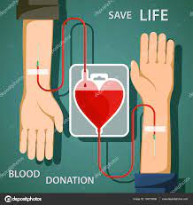
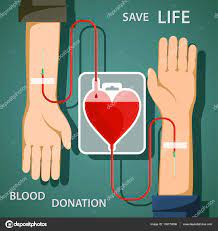

Why Donate blood
why should people donate blood?
Safe blood saves lives.
Blood is needed by women with complications during pregnancy and childbirth, children with severe anaemia, often resulting from malaria or malnutrition, accident victims and surgical and cancer patients.
There is a constant need for a regular supply of blood because it can be stored only for a limited period of time before use.
Regular blood donation by a sufficient number of healthy people is needed to ensure that blood will always be available whenever and wherever it is needed.
Blood is the most precious gift that anyone can give to another person – the gift of life.
A decision to donate your blood can save a life, or even several if your blood is separated into its components – red cells, platelets and plasma – which can be used individually for patients with specific conditions.
What happends When i give blood?
Whether you are a first-time or regular donor, the blood service must make sure that you will come to no harm by donating blood.
This includes checking your blood to be sure it will be safe for the person who receives it.
Before you give blood, you will be asked questions about your medical history, including any medication you are taking, and about your current health and lifestyle.
You may also be asked about recent travel; for example, if you live in a country where there is no malaria, you may be asked whether you have recently visited a tropical country.
These questions will be asked only to safeguard your own health and the health of the person receiving your blood.
You will be told whether you are eligible to give blood and, if not, whether you may be able to donate blood in the future.
Any personal information that you give will be kept confidential and will not be used for any other purpose.
It is very important to be truthful about any reasons why your blood might not be suitable.
Although blood is always tested for infections that can be transmitted by transfusion, such as HIV, hepatitis B and C, and syphilis, a test may not be able to detect a very recent infection.
This means that even though the blood may test negative for a particular infection, it might still infect a patient receiving a blood transfusion.
After answering the questions you will also be given a brief medical examination that may include checking your pulse and blood pressure and ensuring that your weight meets a certain minimum.
A drop of blood will then be taken from your fingertip to check that giving blood will not make you anaemic.
Your health is very important to the blood transfusion service and blood will not be taken unless you can safely give a donation that day.
Donating blood is very simple. You will be made as comfortable as possible, usually in a special chair or on a bed.
The area inside one of your elbows will be cleaned with an antiseptic solution before a trained health worker inserts a sterile needle, connected to a blood collection bag, into your vein.
It usually takes about 10 minutes to donate blood.
After resting for 10 or 15 minutes and taking some refreshment, you will be able to return to your normal activities, although you should avoid strenuous activity for the rest of the day.
You should drink plenty of fluids over the next 24 hours.
 
